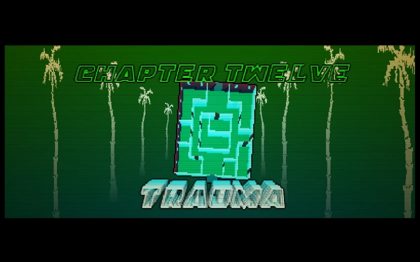
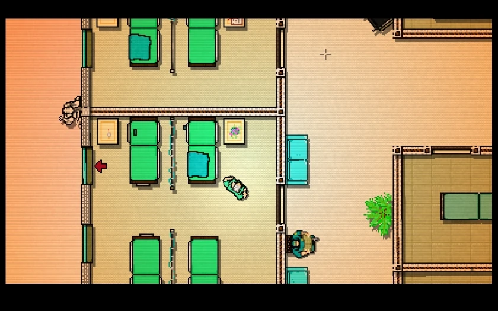
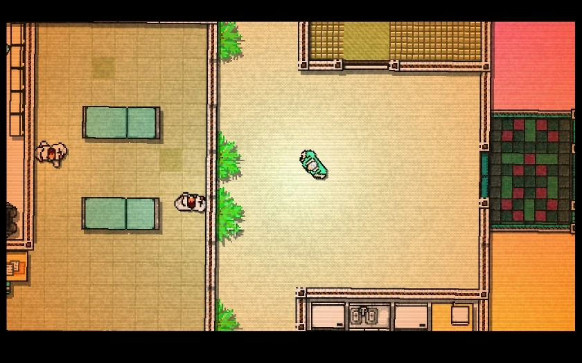

Objetivo
Jacket acorda em um hospital após levar um tiro na cabeça. Ele deve escapar do prédio sem ser visto. Esta é uma fase puramente Stealth (Furtividade). Se for visto, ele não págara...
- Condição: Sem máscaras, sem armas.
- Efeito: A tela balança e fica desfocada, simulando a tontura.
Galeria da Missão

